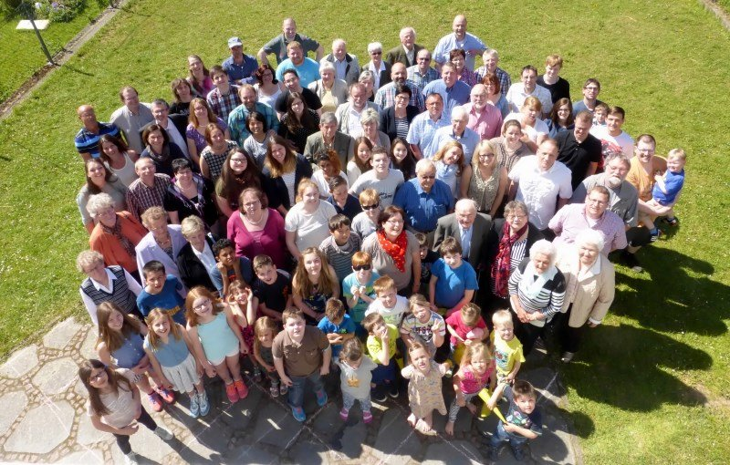

Bibeltage
„Auf und nieder, immer wieder“: vier Abende aus dem Leben Davids. Referent: Markus Wäsch.
Im Kalender ansehenEine christliche Gemeinschaft in Allendorf. Menschen verschiedener Generationen, verbunden durch den Glauben.

Was bei uns gerade ansteht: Gottesdienste, Bibeltage und Gemeindeabende.
„Auf und nieder, immer wieder“: vier Abende aus dem Leben Davids. Referent: Markus Wäsch.
Im Kalender ansehenGottesdienst mit Predigt, Lobpreis und Gemeinschaft. Kinder- und Jugendprogramm läuft parallel.
Live mitfeiernEin Abend zum Miteinander: Austausch, Gebet und gemeinsames Essen. Alle sind herzlich willkommen.
Im Kalender ansehenDie Evangelische Freie Gemeinde Allendorf ist eine christliche Gemeinschaft, die seit vielen Jahrzehnten in Allendorf und Umgebung verwurzelt ist.
Wir glauben an die Bibel als Gottes Wort und leben Gemeinschaft über alle Altersgruppen hinweg, von den Kleinsten bis zu den Ältesten.
Mehr über unsWoran wir glauben und warum. Zwölf Sätze, die unsere Grundlage beschreiben.
AnsehenWas wir wollen und wofür wir uns treffen. Unsere Grundsätze im Alltag.
AnsehenSeit 1884 in Allendorf. Aus der Gemeinschaftsbewegung wurde eine Ortsgemeinde.
AnsehenDie Menschen, die Verantwortung tragen, mit Namen und Kontakt.
AnsehenVierzehn Angebote, vom Kindergottesdienst bis zur Seniorenrunde.
Die neuesten Predigten aus unseren Gottesdiensten, zum Nachhören und Weitergeben.
Der feste Rhythmus der Gemeinde. Einzeltermine und Sondertage stehen im Gemeindekalender.
Hauskreise, Männertreffen und Seniorenkaffee laufen nach Absprache. Einzeltermine und Sondertage kündigen wir im Gottesdienst und hier auf der Startseite an.
Zu den Veranstaltungen